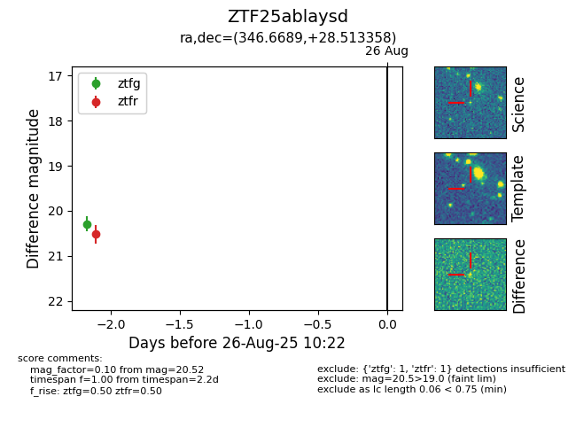

Target ZTF25ablaysd at 2025-08-26 10:22, see:
FINK: fink-portal.org/ZTF25ablaysd
Lasair: lasair-ztf.lsst.ac.uk/objects/ZTF25ablaysd
ALeRCE: alerce.online/object/ZTF25ablaysd
alt names
ZTF25ablaysd (ztf,fink)
coordinates:
equatorial (ra, dec) = (346.6689,+28.51336)
galactic (l, b) = (96.6228,-28.95200)
photometry
last ztfg=20.29, ztfr=20.52
1 ztfg, 1 ztfr detections
